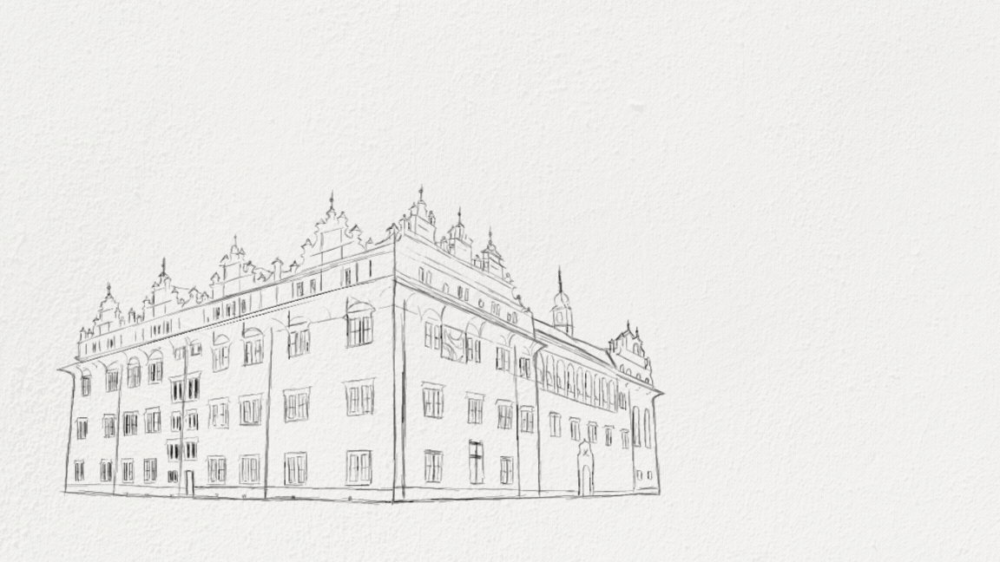
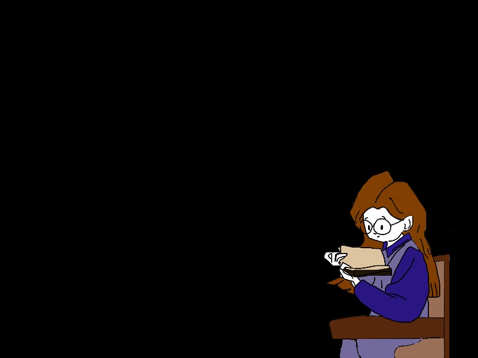
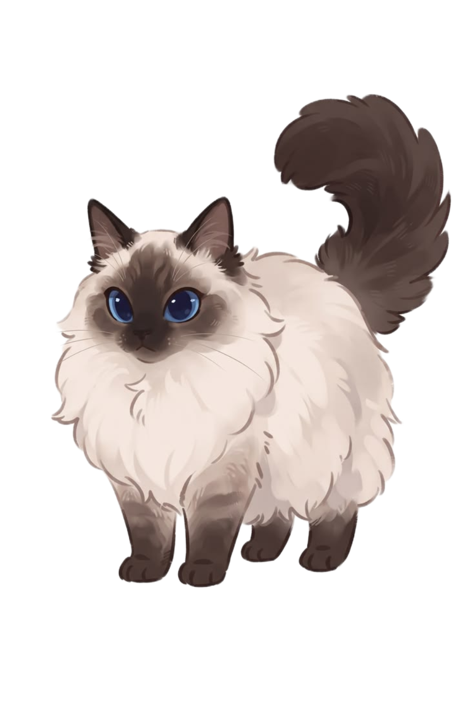

Architectural design
One of my earliest digital creations.These designs showcase my transition from hand-drawn to digital art. The intricate details and geometric patterns reflect my growing skills in digital design.
Every drawing here began with a pencil, a cup of chai, and a cat watching over my shoulder. Now they've leapt off the page into animations you can watch, wander through, and fall a little bit in love with. Come see what happens when art gets curious.
A few of my favourite digital animations.

One of my earliest digital creations.These designs showcase my transition from hand-drawn to digital art. The intricate details and geometric patterns reflect my growing skills in digital design.

This is a simple story animation that I created to practice my digital art skills and storytelling. I tried a simplistic approach to convey emotion and narrative through movement and still frames.

assets/about-cat.pngArt has been my favourite place since I was a kid, when I spent afternoons drawing and filling colouring pages until the crayons wore down. That love grew into digital art, and in college I even made a few animations of my own. Life got busy the way it does, but I never left my art. It is still how I slow down, and I hope it makes your day a little warmer too. Before there were pixels, there was paper, and a cat who insisted on sitting on it. That's how this collection began, and it's still how I work: slowly, by hand, and with a lot of love. Each drawing and animation here is 100% organic, made without AI so you can see the real wobble of a pencil line and the real personality behind every frame. Pour a cup of chai and take a look around.